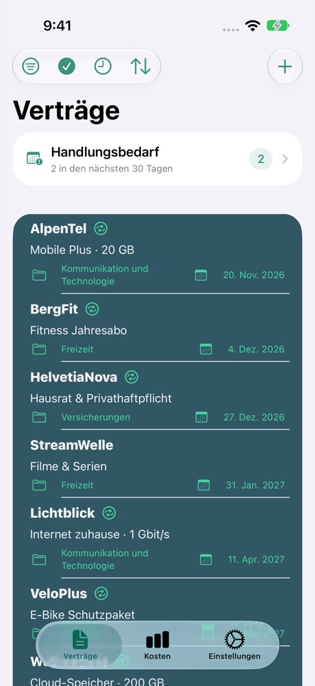
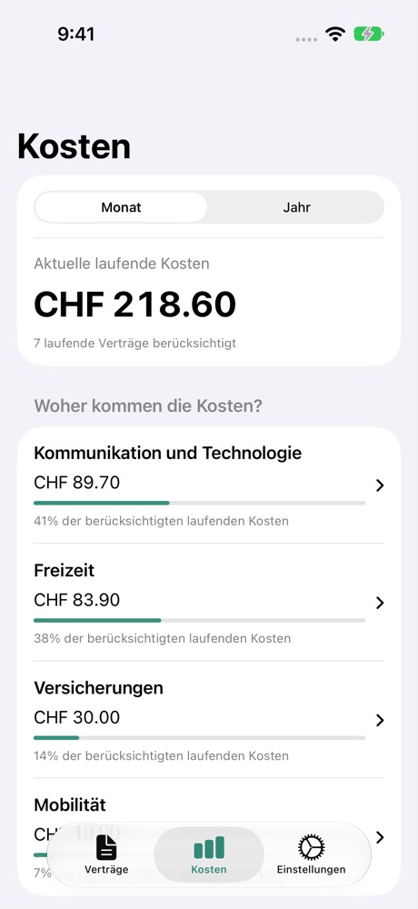

Fristen im Blick
Behalte Kündigungsfristen im Auge und richte Erinnerungen ein. Termine kannst du auch an Kalender und Erinnerungen übergeben.
FÜR DEINEN ALLTAG
Kosten, Kündigungsfristen und Dokumente: Contractly bringt Ordnung in deine Verträge. Direkt auf deinem iPhone.
Im App Store ansehenBis zu 4 Verträge kostenlos · Premium für unbegrenzt viele

Behalte Kündigungsfristen im Auge und richte Erinnerungen ein. Termine kannst du auch an Kalender und Erinnerungen übergeben.
Vergleiche monatliche und jährliche Kosten. Lass Beträge in einer gemeinsamen Anzeigewährung zusammenrechnen.
Füge PDFs, Fotos, Scans und Links deinen Verträgen hinzu. So findest du die Unterlagen dort, wo du sie brauchst.

CONTRACTLY
Vom Mobilfunkvertrag bis zum Fitnessabo: Die Kostenübersicht macht laufende Ausgaben sichtbar. Umgerechnete Beträge dienen zur Orientierung.
Anbieter, Laufzeit und Kündigungsfrist erfassen.
Kosten eintragen und Dokumente hinzufügen.
Fristen prüfen und Erinnerungen festlegen.
Verträge und Dokumente werden auf deinem Gerät gespeichert. Für die Nutzung brauchst du kein Contractly-Konto. Einzelne Funktionen verwenden externe Dienste.
Datenverarbeitung im Detail →Du kannst bis zu vier Verträge kostenlos verwalten. Premium hebt diese Begrenzung auf. Den aktuellen Preis und die Kaufbedingungen findest du im App Store bzw. im Kaufdialog.
Ja. Unter „Backup & Restore“ kannst du Verträge, Dokumente und Einstellungen exportieren und wiederherstellen. Exportierte Backups sind nicht verschlüsselt: Bewahre sie sicher auf.